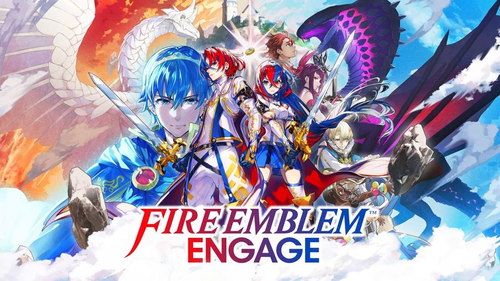
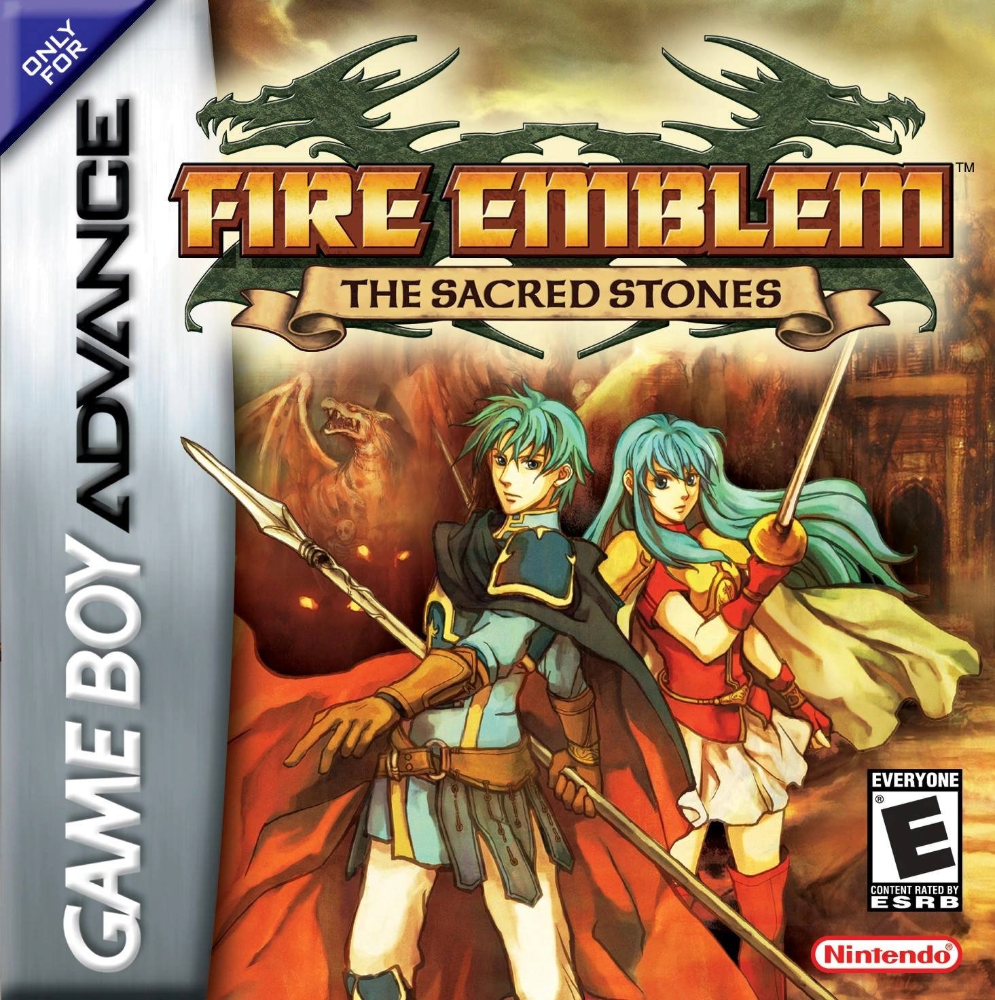
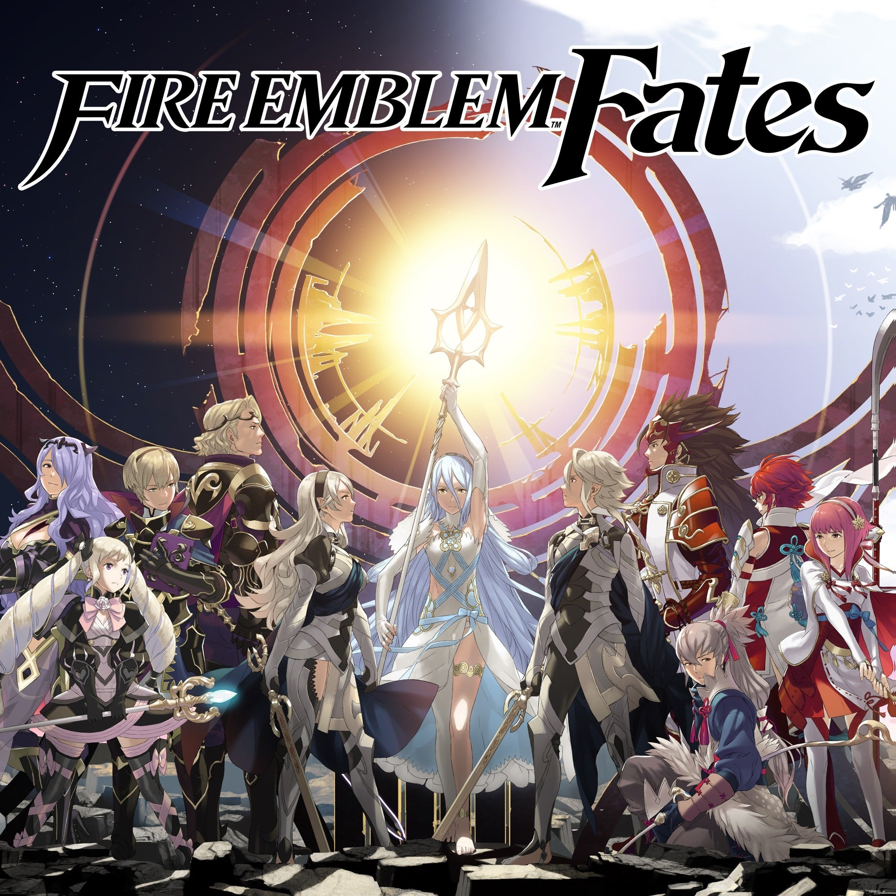
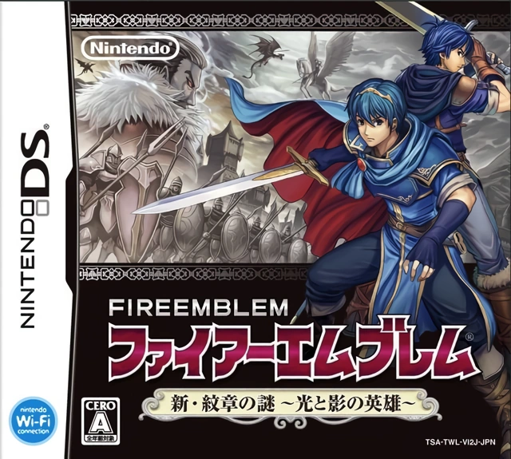

Fire Emblem titles — particularly on GBA and DS — have active modding communities that allow deep access to game data: maps, characters, stats, weapons, skills, animations, and event scripting. I've used these tools across multiple titles to explore what makes Fire Emblem's tactical systems tick, and to create modified experiences with different balance and new content.
This project has been an ongoing study in game design through reverse engineering — understanding design decisions by changing them and observing the downstream effects on player experience.
The overarching goal is to alter the player experience in meaningful ways: tightening or loosening difficulty, rebalancing characters and weapons, creating new tactical scenarios through custom maps, and adding content that feels consistent with each game's design language. Each mod is an experiment in what would happen if a specific design variable were changed.
Modding existing games forces a depth of mechanical understanding that pure design work rarely demands. When you change a unit's stat spread and playtest the result, you rapidly develop intuition for how interdependent systems — stats, map design, enemy placement, weapon triangle — affect each other. The feedback loop is immediate and concrete. These hands-on experiments have directly informed how I approach enemy design and balance work in my own projects.



